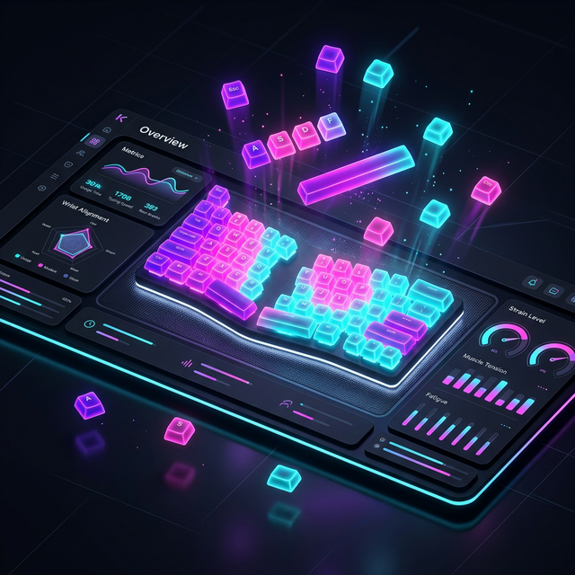

KeyLens tracks your typing habits locally to recommend the perfect ergonomic layout tailored to your specific hands and style.

Elevate your typing experience through scientific analysis.
Monitors bigrams, trigrams, and modifier usage to build a comprehensive map of your typing behavior.
Simulate how your speed and distance metrics would change across QWERTY, Colemak, Dvorak, or custom layouts.
Stunning 2D heatmaps showing frequency by day of week and hour of day, helping you find your peak productivity.
KeyLens records anonymous frequency counts for keys, pairs (bigrams), and triples (trigrams). It never records full text or passwords. All data is stored locally on your machine. Zero cloud sync. Zero telemetry.